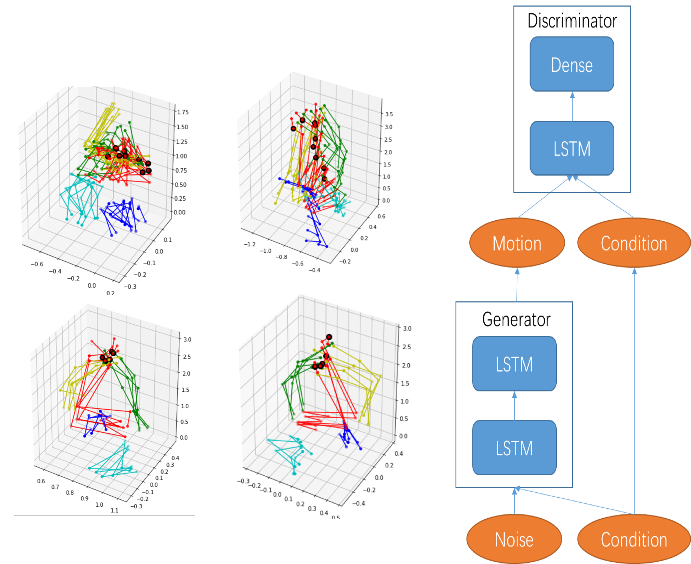

I use unity3D to construct a visualization system for exploring the interaction between wind filed and air pollution. That work was instructed by Prof. Yuan and enrolled in the story telling session in the IEEE pacific visualization conference at Seoul National University in South Korea.
This system confirmed a common belief that wind had an obvious clean effect on air pollution in Beijing Area, however the most impressive finding is that only wind from north can decrease pollution significantly while that from south may bring about air pollution.
Cautionary tales on air-quality improvement in Beijing
The official air-quality statistic reported that Beijing had a 9.9% decline in the annual concentration of PM2.5 in 2016. While this statistic offered some relief for the inhabitants of the capital, we present several analyses based on Beijing's PM2.5 data of the past 4 years at 36 monitoring sites along with meteorological data of the past 7 years.
The analyses reveal the air pollution situation in 2016 was not as rosy as the 9.9% decline would convey, and improvement if any was rather uncertain. The paper also provides an assessment on the city's PM2.5 situation in the past 4 years.
(a–d) Distributions of three key meteorological variables in January and February of 2016, 2017 and the 7 years’ baseline from 2011 to 2017. (a) DEW. (b) Percentages of WD in 2016 and 2017 and also under the 7 years’ baseline. WD are combined into five categories (from bottom up): northwest (NW), northeast (NE), calm and variable (CV), southwest (SW) and southeast (SE). (c,d) Log CWS in north (c) and south (d) WD. (e,f) Contour plots of the joint distribution of CWS and DEW in 2016 (e) and 2017 (f). The colour of the dots reflects the PM2.5 concentration at the time of the observation.
This is a course project for Deep Learning in Peking University.
The project was motivated by a autoencoder generator for motion data. The author add many manual restrictions and achieve a good result. I was wondering if GAN model could learn those manual features and get a roughly same result.
CGAN model and autoencoder with artificial features are compared in this project. The result is that the later one performs better.
It seems that there is still a long way to go before machines can replace human.

The left panel is the output of generator. The right panel is the framework for CGAN model.